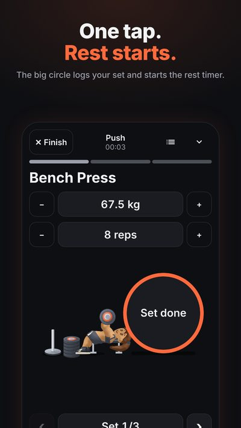
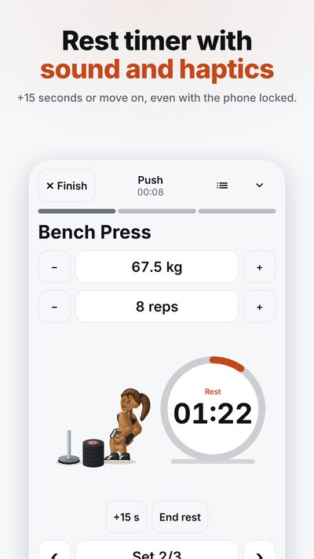
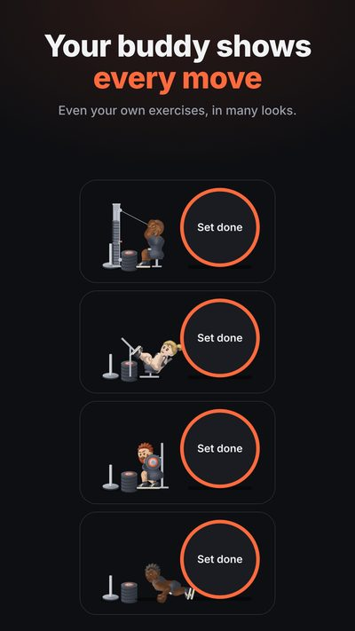
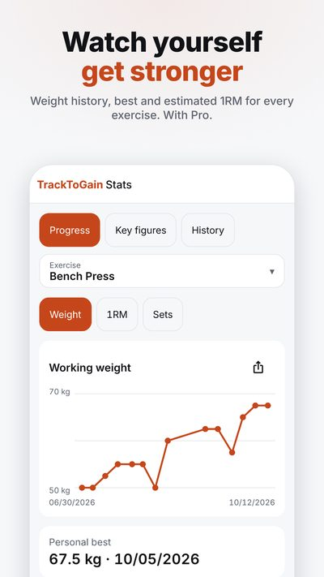
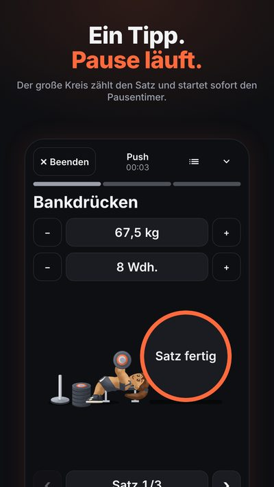
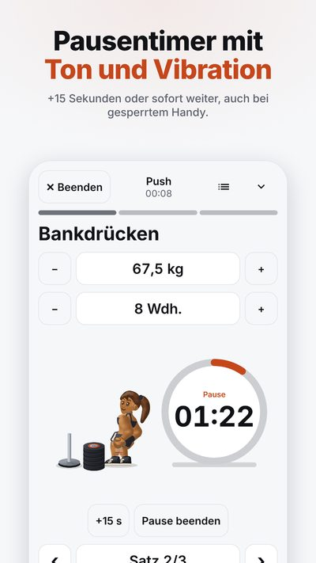
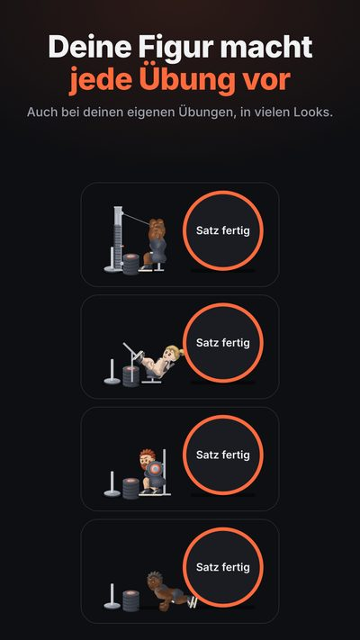
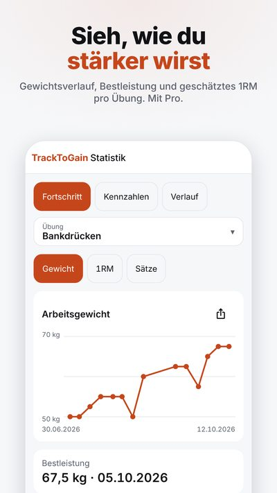

TrackToGain: Gym Tracker
The gym tracker with no account and no subscription: unlimited plans for free, one tap for set and rest.
- One tap The big circle counts your set and starts the rest timer. Vibration and sound when rest is over, even with the phone locked.
- Unlimited plans Start from a template, pick from 100 exercises or create your own, with machine numbers and settings like "Seat 4".
- Training buddy A little figure shows every exercise and lifts a trophy when you beat your best.
- Private by design Everything stays on your device. No account, no tracking, no ads, no internet needed.




Free, with optional Pro
Plans, history, records and backups are free. One optional one-time purchase, TrackToGain Pro, also unlocks the Apple Watch app, estimated 1RM, set history, the heatmap and more looks. No subscription.
Support
Questions or ideas? Write to krug_digital@gmx.de.
TrackToGain: Gym Tracker
Der Gym-Tracker ohne Konto und ohne Abo: unbegrenzte Pläne gratis, ein Tipp für Satz und Pause.
- Ein Tipp Der große Kreis zählt den Satz und startet den Pausentimer. Vibration und Ton am Ende der Pause, auch bei gesperrtem Handy.
- Unbegrenzte Pläne Starte mit einer Vorlage, wähle aus 100 Übungen oder lege eigene an, mit Gerätenummer und Einstellungen wie „Sitz 4“.
- Trainingsfigur Eine kleine Figur macht jede Übung vor und hält bei einer Bestleistung den Pokal hoch.
- Privat aus Prinzip Alles bleibt auf deinem Gerät. Kein Konto, kein Tracking, keine Werbung, kein Internet nötig.




Kostenlos, mit optionalem Pro
Pläne, Verlauf, Rekorde und Sicherung sind kostenlos. Ein einmaliger, optionaler Kauf, TrackToGain Pro, schaltet zusätzlich die Apple-Watch-App, geschätztes 1RM, Satzverlauf, Heatmap und mehr Looks frei. Kein Abo.
Support
Fragen oder Ideen? Schreib an krug_digital@gmx.de.